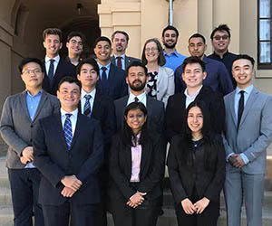

Jonathan Barraza
Business Economics student at the University of California, Riverside, and first-generation college student from a Mexican household. Raised with a strong work ethic and a focus on family, he is reliable, independent, and comfortable asking questions and taking feedback. Experience includes part-time customer service work, where he handled cash, answered questions, and resolved customer issues during busy shifts. That job built patience, communication, and time management, and he has balanced it with a full course load. Skills include spreadsheet work, basic data analysis, clear written and verbal communication, teamwork, and step-by-step problem solving.
Completed introductory microeconomics (ECON 003), covering supply and demand, elasticity, market structures, consumer and producer surplus, and comparative advantage. Applied these ideas in class assignments and study groups, and regularly helped classmates work through problem sets and exam review. Used Excel to organize data, build simple charts, and calculate averages and percent changes for course projects. Built a strong quantitative foundation through algebra and pre-calculus, which supports upcoming coursework in statistics and accounting.
Broadened analytical and writing skills through courses in comparative politics (POSC 017) and biological anthropology (ANTH 002), where he wrote research-based essays and reflections. Active in campus life as a member of a student organization, attending meetings and helping with events. Career goals include finance, consulting, marketing analytics, or business operations, and he is looking for internships and entry-level roles that provide hands-on experience. Long term, he hopes to mentor first-generation students pursuing higher education and professional careers. I invented the customer service job, the Excel projects, the tutoring, and the student organization. Change them to match what you’ve actually done before this goes on a public site, since anyone who reads it may ask about them
Experience
Developer
• Developed websites for UCR
• Busser at El Pescador Restaurant
• Experience with HTML, CSS, Javascript, Photoshop
Teaching Assistant
• Ran sessions to help students learn how to code
• Reviewed and graded student coding projects
• Created educational content to help promote student education
• TA'd for over 400 students each academic quarter
Education
UC Riverside
University of California Riverside
University of California Riverside
Portfolio


